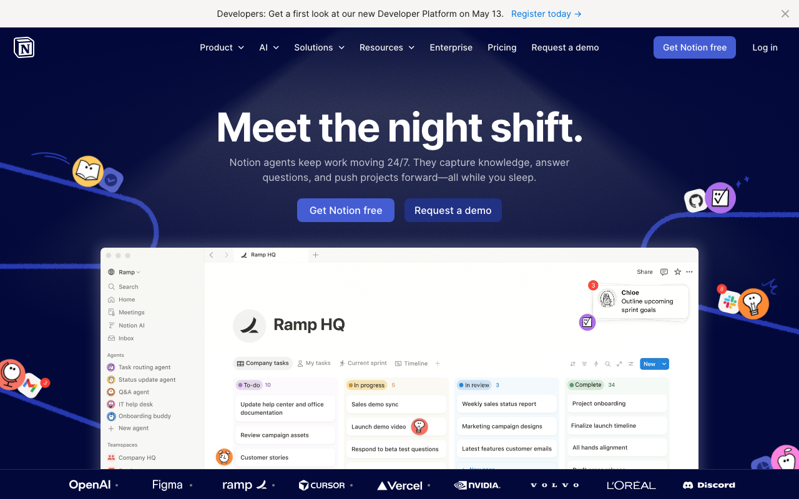

warm ink + 매거진 타이포그래피
Notion의 마케팅 홈은 "워드프로세서가 매거진이 된 느낌"을 전달한다. 순백 #FFFFFF이 아니라 warm ink 계열 #31302E 본문, #191918 ink-black, #F9F9F8 paper-cream 배경이 UI 전반의 기본 조합이다. 2026년 4월 현재 "Meet the night shift" 캠페인에 맞춰 --color-background: var(--color-purple-100) → 실제 렌더는 dark purple 무드로 전환된다.
색상 전략은 2계층이다. Structural layer (gray ramp 9단계, warm ink)가 거의 모든 UI를 덮고, Semantic layer (blue/purple/pink/orange/yellow/green/teal/red 8-family × 9-step)는 블록 태그, 태그 칩, illustration에만 제한적으로 등장한다. 브랜드 앵커는 캠페인에 맞춰 #9849E8 (--color-purple-500) — night shift accent.
타이포그래피는 NotionInter(자체 호스팅 Inter 계열 variable)와 Lyon Text(Commercial Type 유료 serif)의 duo 시스템이다. body는 NotionInter 400, H1은 Lyon Text — 이 이중 구성이 "Notion은 결국 문서 도구"라는 정체성을 반영한다. 타이포 scale은 10단계 12px → 76px로 매우 넓게 펼쳐지며, 큰 사이즈(600 이상)에는 weight별 negative letter-spacing 3-variant가 제공된다 (함정 #13 정석).
레이아웃은 1252px 또는 839px max-width 2단, 1080px/1280px/1440px 3단 breakpoint로 동작한다. Spacing scale은 --spacing-0 ~ --spacing-160 rem 단위 (token 이름 = px 값). Radius는 --border-radius-200 (4px) ~ --border-radius-900 (16px) + round(9999px) 10단. Shadow는 3-layer 다층 (--shadow-level-100/200/300)으로 설계.
모션의 특징은 text-decoration-color transition을 광범위하게 쓰는 것 — 링크 underline이 "스르륵" 나타나고 사라지는 서브틀한 효과가 Notion UI 전체에 깔려 있다.
Notion — --color-*
Notion 마케팅 홈의 실제 CSS 토큰 기반 디자인 시스템 리포트. 현재 "Meet the night shift" 캠페인 반영.

/* 1. 폰트 (duo — serif + sans) */
body {
font-family: "NotionInter", Inter,
-apple-system, sans-serif;
font-weight: 400;
font-size: 16px;
color: #31302E; /* warm ink */
}
h1, h2, h3 {
font-family: "Lyon Text", Georgia, serif;
}/* 2. Warm neutral ink (NOT cool) */
:root {
--bg: #FFFFFF;
--paper: #F9F9F8;
--ink: #31302E;
--ink-strong: #191918;
--border: #DFDCD9;
}
body {
background: var(--bg);
color: var(--ink);
}/* 3. 브랜드 악센트 (current campaign) */
:root {
--brand: #9849E8; /* purple-500 */
--brand-hover: #7237AE;
}#FFFFFF + 본문을 pure #000000으로 두지 마라. Notion의 정체성은 warm ink다 — 본문은 #31302E(warm 800), 헤드라인은 #191918, 페이퍼 배경은 #F9F9F8. 한 톤만 식혀도 즉시 Office 365 느낌이 된다 (함정 #10).
출처와 수집 기준
CSS 커스텀 프로퍼티 직접 파싱으로 추출. AI 추론 없음.
https://www.notion.so--color-*, --font-*, --spacing-*, --shadow-*테크 스택
프레임워크, 디자인 시스템 구조, CSS 아키텍처.
globalNavigation_globalNavigation__7c1YP)#9849E8 (캠페인) / #191918 ink-black (평상시)타이포그래피
10-step scale 12→76px + weight별 letter-spacing 3-variant. 본문 16px, heading serif(Lyon Text), 큰 사이즈 음수 tracking 필수.
Lyon Text (Commercial Type, 유료)NotionInter (자체, OFL 파생)iA Writer Mono (유료)Permanent Marker (OFL)컬러
Structural layer (gray 9-step warm ink) + Semantic layer (8-family × 9-step). 현재 캠페인 accent는 purple-500.
Alias Layer
Dominant Colors (실제 DOM 빈도)
스페이싱
Token 이름 suffix = px 값 그대로. scale: 0/4/8/12/16/20/24/28/32/40/48/56/64/72/80/96/128/160 — rem 단위 저장.
라디우스 (모서리 반경)
10-step scale 4→16px + round(9999px). border-radius-200 ~ border-radius-900 numeric 네이밍.
섀도우
3-level multi-layer stack — level-100 (2-layer), level-200 (4-layer), level-300 (2-layer). 모두 opacity 1-8% 서브틀.
모션
text-decoration-color + outline-color transition이 Notion 모션의 시그니처. fade-in/out duration 토큰으로 일괄 관리.
레이아웃 패턴
1252/839/600 3단 container + 1080/1280/1440 3단 breakpoint. Header 60px. 현재 캠페인은 dark 히어로 + light content.
Grid System
- Content max-width: 1252px (narrow) / 839px (prose)
- Marketing: 1200px
- Grid type: CSS Grid + Flexbox
- Column count: 12-col implicit
- Gutter: 24px (--spacing-24)
Hero (current campaign)
- Layout: 1-column centered + 하단 product mockup
- Background: radial-gradient dark navy/purple (night shift)
- H1: 64px weight 600 tracking -0.1328em (Lyon Text)
- Max-width: 960px (텍스트) / 1252px (canvas)
- Pattern: dark mode 섹션 + illustration agents
Section Rhythm
- Padding: 80px 24px
- Max-width: 1252px centered
- 섹션 전환: 캠페인 모멘트에만 dark ↔ light drastic
Card Patterns
- Background: #FFFFFF (light)
- Border: 1px solid #DFDCD9 또는 none + shadow
- Radius: 12px (--border-radius-700)
- Padding: 24px
- Shadow: level-100 resting → level-200 hover (4-layer)
Navigation
- Type: horizontal (globalNavigation)
- Position: relative top 0 z-index 100
- Height: 60px (--header-height)
- Background: #FFFFFF 또는 transparent (campaign)
- Dropdown: 비대칭 padding 24/95/32/87
Content Width
- Prose: 600-839px
- Marketing: 1252px
- Docs sidebar: 280px
- Header: 60px height
반응형
Mobile-first. 주 breakpoint 840px(205회)와 600px(200회) + 1080/1280/1440 3단 desktop.
컴포넌트
Button 3-4 variant + badge + card + nav + video/play button. text-decoration-color transition이 링크 signature.
<button class="button_button__atjat" data-variant="primary">Get Notion free</button><button class="button_button__atjat">Try Notion</button><button class="button_button__atjat" data-variant="secondary">Request a demo</button>Notion agents keep work moving 24/7.
<div class="cardCompact_cardCompact__W2i4I">
<h3>Meet the night shift.</h3>
<p>Notion agents keep work moving 24/7.</p>
</div>라이팅 원칙
친근-편안한 productivity — 사과스럽게 warm, 매거진 제목 톤.
CSS / Tailwind 내보내기
그대로 복사해 프로젝트에 붙여 넣을 수 있는 Drop-in 스니펫.
에이전트 가이드
AI 에이전트(Claude, GPT)가 이 디자인 시스템으로 구현할 때 참조하는 Quick reference.
Example Component Prompts
Notion 스타일 히어로 (Night shift 캠페인 다크 mode).
- 배경: radial-gradient(circle, #0A0E2B 0%, #050714 100%) + isometric agents illustration
- 상단 banner: 공지 + "Register today" link
- H1: Lyon Text 64px weight 600 color #FFF tracking -0.1328em 중앙
- 서브: NotionInter 18px color rgba(255,255,255,0.7) max-width 600px
- Primary CTA: bg #FFF color #191918 radius 8px height 44px "Get Notion free"
- Secondary CTA: transparent + border 1px solid rgba(255,255,255,0.3) color #FFF
- 하단 product screenshot card radius 16px shadow-level-300Notion 스타일 히어로 (평상시 light).
- 배경: #FFFFFF
- H1: Lyon Text 54px weight 600 color #191918 tracking -0.1171875em
- 서브: NotionInter 20px color #31302E
- Primary CTA: bg #191918 color #FFFFFF radius 8px
- Secondary CTA: transparent + border 1px solid #DFDCD9 color #191918Notion 스타일 카드.
- bg #FFFFFF border-radius 12px border 1px solid #DFDCD9
- padding 24px (--spacing-24)
- shadow (resting): --shadow-level-100 2-layer
- hover: --shadow-level-200 4-layer transition 200ms
- 제목 NotionInter 18px weight 600 color #191918
- 본문 NotionInter 15px color #31302E line-height 1.5
- 링크 underline: text-decoration-color transition 200ms fadeNotion 스타일 상단 nav.
- height 60px (--header-height) position relative z-index 100
- bg #FFFFFF (또는 transparent campaign), border-bottom 1px solid #DFDCD9 on scroll
- 로고: SVG wordmark — campaign dark mode면 white + drop-shadow 1.5px
- 링크: NotionInter 14px weight 500 color #31302E hover #191918
- 링크 underline: text-decoration-color 200ms fade
- CTA 페어: Log in + Get Notion free (primary bg #191918 radius 8px)- 본문 텍스트 색은 반드시 warm #31302E (gray-800) — pure black 금지.
- 배경은 #FFFFFF 또는 paper #F9F9F8. cool neutral 금지.
- heading Lyon Text + body NotionInter 듀얼. 한쪽만 쓰지 말 것.
- weight 400/500/600/700 4단계만. 350/550 같은 중간값 금지.
- 사이즈 600 이상이면 weight별 negative tracking 3-variant 적용.
- Spacing은 --spacing-N (N = px) 토큰만. 임의 값 금지.
- radius는 border-radius-200~900 (4~16px) + round 중 하나.
- 섹션 전환은 '섹션 단위'만. 카드 단위 dark 전환 금지.
- shadow는 level-100/200/300 multi-layer stack. 단층 금지 (함정 #11).
- 링크 hover는 text-decoration-color transition으로 fade — 즉각 색 변경 금지.
- 반응형: 600/840/1080/1280/1440 5단 mobile-first.
Do / Don't
실제 CSS에서 검증된 규칙만 수록.
DO
- ✅ 본문 텍스트 색은 #31302E (warm gray-800). 헤딩은 #191918 (ink).
- ✅ 배경은 #FFFFFF 또는 #F9F9F8 (paper cream). 중간 회색 금지.
- ✅ H1/H2에 Lyon Text (serif) + body에 NotionInter (sans) 듀얼.
- ✅ weight는 400 / 500 / 600 / 700 4단계로만.
- ✅ 사이즈 600(32px) 이상에는 weight별 negative letter-spacing 적용.
- ✅ Spacing은 --spacing-N 토큰 (4/8/12/16/20/24/28/32/40/48/56/64/72/80/96/128/160) 중에서만.
- ✅ Shadow는 --shadow-level-100/200/300 다층 stack 사용.
- ✅ Link underline은 text-decoration-color transition 200ms로 fade.
- ✅ radius는 4/5/6/8/10/12/14/16/9999 (border-radius-200~900 + round).
DON'T
- ❌ 본문 텍스트를 #000000 또는 black으로 두지 말 것 — 대신 #31302E 사용.
- ❌ 배경을 cool #F5F5F7(Apple) 또는 #EEEEEE로 두지 말 것 — 대신 #F9F9F8 (warm paper).
- ❌ CTA primary 배경을 brand-500 raw로 두지 말 것 — 캠페인이면 #9849E8, 평상시면 #191918. 상황 분기.
- ❌ body에 font-weight: 300 또는 350 사용 금지 — Notion은 400이 맞다.
- ❌ 한 letter-spacing (-0.02em)으로 전체 H1-H6 통일 금지 — 사이즈/weight별 음수 tracking 필수 (함정 #13).
- ❌ 폰트를 body-only Inter로 대체하지 말 것 — heading의 Lyon Text 없으면 매거진 느낌 사라짐.
- ❌ radius 20px, 30px 같은 외부 값 금지 — 10단 + round만.
- ❌ box-shadow: 0 4px 12px rgba(0,0,0,0.1) 같은 단층 shadow 금지 — level-200 4-layer stack (함정 #11).
- ❌ 링크 색 즉시 바뀌는 color .1s transition 금지 — text-decoration-color에 transition 걸기.
- ❌ light/dark를 같은 섹션 안에서 강제 전환하지 말 것 — drastic transition은 섹션 단위여야 한다.